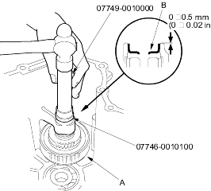
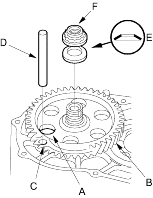
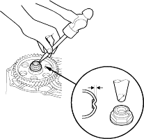

- Handle driver, 07749-0010000
- Driver attachment, 32 x 35 mm, 07746-0010100
- Wrap the sub-shaft splines with tape to prevent O-ring damage. Install new O-rings in the sub-shaft grooves, then remove the tape.
- Install new O-rings on the sub-shaft.
- Assemble the 1st-hold clutch with the related parts.
- Place the sub-shaft in the transmission housing and install the 1st-hold clutch assembly (A)

- Install the new ATF guide cap (B) in the direction shown using the special tools as shown.
- Align the hole (A) of the 1st gear (B) with the hole (C) of the transmission housing, then insert a 8.0 mm (0.31 in.) pin (D) to hold the sub-shaft while tightening the sub-shaft locknut.

- Install the new conical spring washer (E) in the direction shown and install the new locknut (F).
- Tighten sub-shaft locknut to 93 Nm (9.5 kgf/m, 69 lbf/ft).
NOTE: Use a torque wrench to tighten the locknut. Do not use an impact wrench. - Remove the 8.0 mm (0.31 in.) pin to hold the sub-shaft.
- Stake the locknut into its shaft using a 3.5 mm punch.
